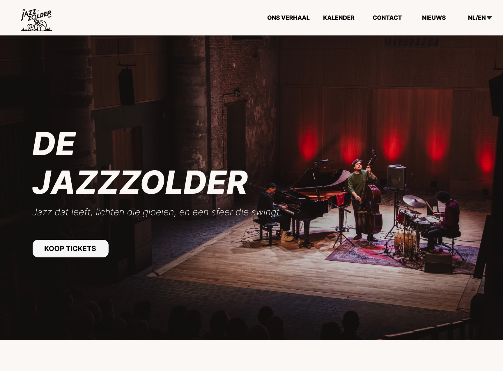
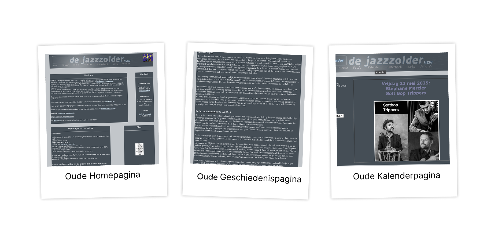

WEB DEVELOPMENT & DESIGN
JazzZolder Website

Project Overview
JazzZolder is een jazzclub in hartje Mechelen met een rijke geschiedenis en een passie voor live jazz. Ze hadden behoefte aan een website die hun unieke sfeer uitstraalt en het voor bezoekers eenvoudig maakt om informatie te vinden over optredens en evenementen.
De uitdaging was eenvoudig, niet responsief en miste volledig de sfeer van de club. Daarom heb ik gewerkt aan een nieuwe visuele identiteit en een website die beter aansluit bij JazzZolder.
Tools & Technologieën
Oude Website
Het startpunt van het project: verouderd, niet responsief en zonder de sfeer van de club.

Kleur & Typografie
De visuele identiteit van JazzZolder vertaald in kleurgebruik en lettertypes.
Kleurenpalet
Typografie
HEADINGS
Inter BoldGebruikt voor titels en belangrijke accenten.
BODY
Inter RegularGebruikt voor lopende tekst en navigatie.
Het Design Proces
Van concept tot realisatie: een kijkje in mijn aanpak stap voor stap.
Think VS Now — Analyse
Het project startte met een vergelijkende analyse van de bestaande website tegenover de gewenste nieuwe situatie.
Branding — Kleur & Typografie
Voor de visuele identiteit kozen we een kleurenpalet dat de sfeer van JazzZolder perfect ondersteunt.
Research & Inspiratie
Onderzoek naar concurrenten, jazzclubs en culturele instellingen.
Flowchart & Low-fidelity Wireframes
Op basis van de analyse werd de structuur uitgewerkt.
High-fidelity Prototype & Oplevering
Alle voorgaande keuzes kwamen samen in een volledig uitgewerkt prototype.
Gekozen als beste project
De JazzZolder website werd door de opdrachtgever geselecteerd als de lieveling van de eindopdracht. Het ontwerp en de uitwerking vielen in de smaak door de combinatie van sfeer, structuur en gebruiksgemak.
Bekijk binnenkort eindresultaat online